1. Magnet attracts iron needle. This is dash change. (a reversible or an irreversible)
2. Boiling of egg results in dash change. (a reversible or an irreversible)
3. Changes that are harmful to us are dash (desirable or undesirable)
4. Plants convert carbon-di-oxide and water into starch. This is an example of dash change. (natural or human made)
5. Bursting of fire crackers is a dash change whereas germination of seeds is a dash change. (slow or fast)
1. Growing of teeth in an infant is slow change.
2. Burning of match stick is a reversible change.
3. Change of new moon to full moon is human made.
4. Digestion of food is a physical change.
5. In a solution of salt in water, water is the solute
1. Curdling of milk: irreversible change: Formation of clouds: dash change
2. Photosynthesis: Dash change: burning of coal: Human – made change
3. Dissolution of glucose: reversible change: Digestion of food: Dash change
4. Cooking of food: desirable change: decaying of food: DASH change
5. Burning of matchstick: DASH change: Rotation of the Earth: Slow change
1. Growth of a child, Blinking of eye, Rusting, Germination of a seed
2. Glowing of a bulb, lighting of a Candle, breaking of a coffee mug, curdling of milk
3. Rotting of an egg, condensation of water vapour, trimming of hair, Ripening of fruit
4. Inflating a balloon, popping a balloon, fading of wall paint, burning of kerosene
1. What kind of a change is associated with decaying of a plants?
2. You are given some candle wax. Can you make a candle doll from it? What kind of change is this?
3. Define a slow change.
4. What happens when cane sugar is strongly heated? Mention any two changes in it.
5. What is a solution?
1. What happen when paper is burnt? Explain.
2. Can deforestation be considered a desirable change? Explain.
3. What type of changes is associated with germination of a seed? Explain
1. Give one example for each case that happens around you.
a. Slow and fast change
b. Reversible and irreversible change
c. Physical and chemical change
d. Natural and man-made change
e. Desirable and undesirable change
1. When a candle is lit the following changes are observed.
a. Wax melts.
b. Candle keeps burning.
c. The size of the candle decreases.
d. The molten wax solidifies
e. Which of the changes can be reversed? Justify your answer.
Air is present everywhere around us. We cannot see air. But we can feel its presence in so many ways. For example, we feel air when the trees rustle, clothes hanging on a clothes-line sway, pages of an open book flutters when the fan is switched on, when kites fly in the sky. We cannot see, touch or taste air but we can feel it. It is the air that makes all these movements possible. Thus, we can understand that air is present all around us.
Air is necessary for us to live. We can live without food for some days, without water for a few hours, but cannot survive without air for more than a few minutes. So, air is very important for all living beings to survive. When air is moving it is called wind. It is cool and soothing as breeze.
When air moves with force, it is called storm. It can even uproot trees and blow off the roof tops. Air is necessary for breathing and also for combustion. Shall we do an activity?
Activity 1: Air is everywhere Let us take an empty glass bottle. Is it really empty or does it have something inside?
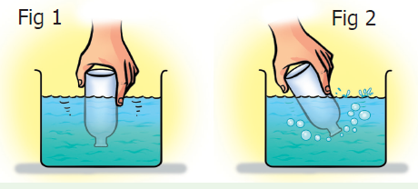
Now, shall we turn the glass bottle upside down? Can you agree that there is still something inside the empty glass bottle? Let us do the following activity to find what is there inside an empty glass bottle. Dip the open mouth of the bottle into the trough filled with water as shown in
Figure 1. Observe the bottle. Does water enter the bottle? DASH
Now tilt the bottle slightly. Now again dip the open mouth of the bottle as shown in Figure 2. Do you think that water will enter the bottle? DASH
Kindly observe the Figure 2 carefully. You can see bubbles coming out of the bottle.
When you perform the experiment, can you hear the bubbly sound? can you now guess what was inside the bottle? DASH
Yes, you are right.
It is “air” that was present in the bottle. The bottle was not empty at all. In fact, it was filled completely with air even when you turned it upside down. That is why we notice that water does not enter the bottle when it is pushed in an inverted position, as there was no space for air to escape.
When the bottle was tilted, the air was able to come out in the form of bubbles, and water filled up the empty space that the air has occupied.
Hence, we can see that air fills all the space inside the bottle.
Air
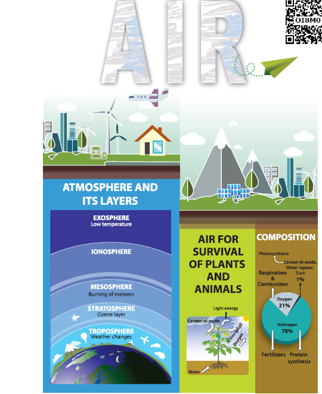
Atmosphere and its layers
Exosphere low temperature
Ionosphere
Mesosphere – Burning of meteors
Stratosphere – Ozone layer
Troposphere – Whether changes
Air for survival plants and Animals
Light energy
Carbon di ox side
Chlorophyll
Oxygen
Water
Composition
Dust 1 percentage - Carbon di ox side, Water vapour - Photosynthesis
Respiration and combustion
Oxygen 21 percentage - Respiration and combustion
Nitrogen 78 percentage – Fertilizers and protein synthesis
Uses of air
Breathing
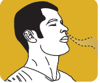
Burning
Cycle tube
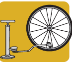
Patient
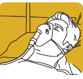
Mountaineer
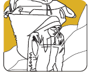
Our earth is surrounded by a huge envelope of air called the atmosphere. Atmosphere extends to more than 800km above the surface of earth and is held in place by the earth’s gravity. The atmosphere protects us from many harmful rays coming from the sun. The air envelope is thicker near the earth’s surface and as we go higher the density and the availability of air gradually decreases. This is because, as we go higher, the force of gravity decreases, so it is not able to hold large amount of air.
The atmosphere is made of five different layers – the troposphere, the stratosphere, the mesosphere, the ionosphere and the exosphere.
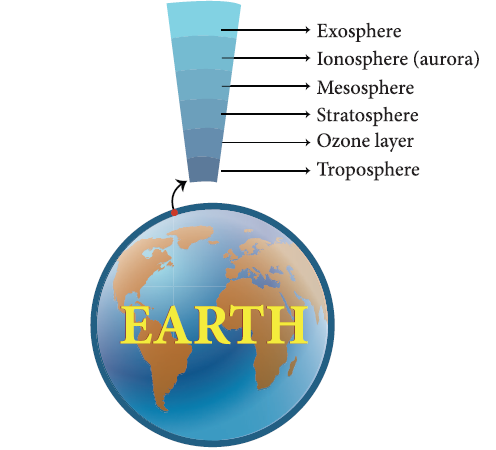
The troposphere is the layer closest to the earth. It is the layer in which we live. It extends upwards for about 16km above the surface of the earth. Movement of wind takes place in this layer. It also contains water vapour, which is responsible for making clouds. This layer is responsible for the weather we experience on earth.
Aircrafts usually fly above this layer to avoid strong winds and bad weather. The stratosphere lies above the troposphere. This layer has the ozone layer in it. The ozone layer protects all life on earth from the harmful ultraviolet rays of the sun.
A weathercock shows the direction in which the air is moving at a particular place. You can also make a wind sock to find the direction of the wind. Can you try it yourself?
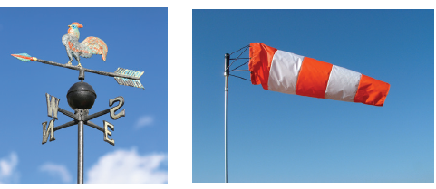
Is air a thing or a composite mixture?
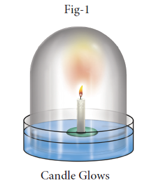
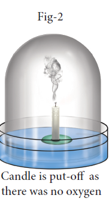
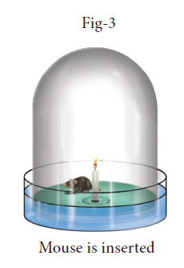
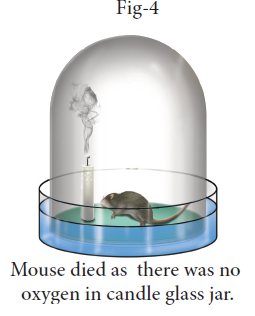
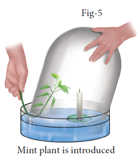
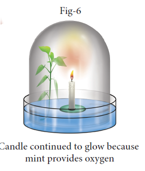
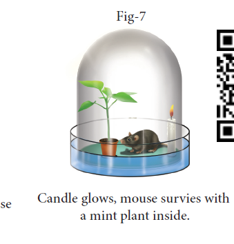
For long time, that is, until eighteenth century, human thought ‘air’ as a fundamental constituent of matter. However, an ingenious experiment conducted by Joseph Priestley in 1774 showed that "air is not an elementary substance, but a composition," or mixture of gases. He was also able to identify a colourless and highly reactive gas which was later named ‘oxygen’ by the great French chemist Antoine Lavoisier.
Priestley took a tub of water and made a float and placed a candle on it. He covered the candle with a glass jar. [As the bottom portion of the jar was filled with water, no air can enter or exit and hence the jar was completely sealed (Figure 1). As you would have guessed the candle flame was extinguished in a very short time. He used a magnifying glass to focus the sun rays to light the candle. Thus, he tried to relight the candle many times without opening the sealed jar (Figure 2). The candle could not be relit. What can we make out of it?
It was clear that something in the air was being used for burning and being converted into another substance. Once the substance in the air that was aiding the burning was completely used by the burning flame and converted into another substance, the flame went out.
[Later chemist named the substance necessary for burning as oxygen and during the process of burning oxygen is converted mostly into carbon dioxide]
Now as the jar was inside the water, Priestley could gently lift the jar and place a live mouse inside it without allowing outside air to enter the jar (Figure 3). Without oxygen, as you would have guessed, the mouse died (Figure 4). It was clear that oxygen was necessary for the survival of the mouse.
In the next step, he gently lifted the jar and placed a mint plant (Figure 5). (Note: Look at the Figure- 5; you could see that the plant is inserted into the bell jar when the jar is very much inside the water. This is done to ensure that the outside air is not entering into the bell jar.) Plant being a living thing like mouse, perhaps he thought, would die. Instead, the plant survived. After placing the mint plant, he lit up the candle and it continued to burn (Figure 6).
In fourth experiment, he took a jar, burned a candle and converted all oxygen into carbon dioxide. He placed a mint plant and a mouse into this jar. Both the plant and the mouse survived (Figure 7). He found that plants and animals have a synergy. Animals consume oxygen and release carbon-di-oxide and plants take up carbon dioxide and release oxygen.
During 1730 to 1799, Jan Ingenhousz showed that sunlight is essential to plants to carry out photosynthesis and also to purify air that is fouled by breathing animals or by burning candles. From these experiments it was clear that “air” is a composite mixture of many gases like oxygen and carbon di- oxide.
Proof for release of oxygen in photosynthesis
Activity 2: Take a healthy branch of Hydrilla and place it in a funnel. Invert the funnel in a beaker of water as shown in the figure. Invert a test tube over the stem of the funnel. The stem of the funnel should be kept immersed inside the water.
Leave the beaker in sunlight for some time. You will notice some bubbles rising in the test tube. The bubbles contain oxygen released by the plant during photosynthesis. If we show a glowing splinter to the collected air, it burns brightly. This shows that the collected gas is oxygen.
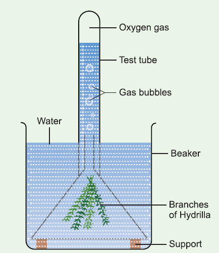
Test for the proportion of oxygen and nitrogen in air
Activity 3: We know that iron undergoes rusting with oxygen and forms iron oxide. This process can be used to estimate the percentage of oxygen in air, which has been removed by the rusting reaction. Take a small portion of iron wool, press it into a 20 ml graduated test tube and wet it with water. Tip away excess of water.
Take a 500 milli beaker and fill half of the beaker with water. Invert the test tube and place it in air. Leave the arrangement at least for a week without making any disturbance to the test tube. Observe the changes that had happened in the iron wool and to the level of water inside the test tube. We could see that the water level has increased inside the test tube. The rise in water is because of oxygen in air which has been removed by the rusting reaction. This will be about 20% which is approximately the percentage of oxygen in the air.
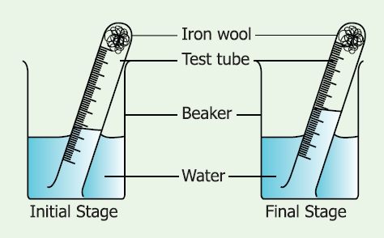
More to Know!
Daniel Rutherford, a Scottish chemist, discovered nitrogen. He removed oxygen and converted it into carbon-di-oxide using an inverted bell jar using a burning candle. He passed this air without oxygen through lime water and removed carbon-di-oxide also.
Once the carbon-di-oxide was removed in that air, neither a candle burned nor a plant breathed. Hence, he was sure that the remaining air that he had, did not have oxygen and carbon-di-oxide. He was able to produce a gas, which showed the same property of the air without oxygen and carbon-di-oxide. Hence this gas was named ‘nitrogen’.
Test for Carbon-di-oxide in air
Pour some lime water in a glass tumbler. Bubble some air using a straw through the limewater. After a few minutes, look at the lime water carefully. The lime water will produce a white precipitate and that the lime water will eventually turn to a milky white solution. This shows the presence of carbon-di-oxide in air.
From Priestley's experiment which was followed by Ingenhousz and Rutherford, we came to know that air was not just one substance. We will now describe what air is made up of. This is called composition of air.
The major component of air is nitrogen. Almost four – fifth of air is nitrogen. The second major component of air is oxygen. About one fifth of air is oxygen. In addition to nitrogen and oxygen gases, air also contains small amount of carbon – di – oxide, water vapour and some other gases like argon, helium etc. The air may also contain some dust particles.
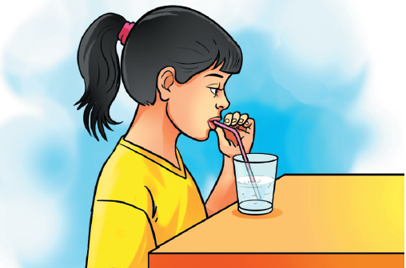
The composition of air in terms of percentage of its various components can be written as follows
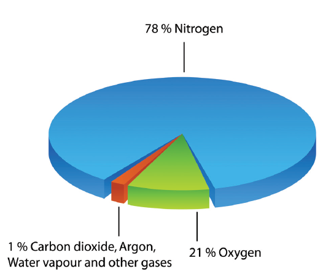
The composition of air changes slightly from place to place and also from season to season. For example,
Test for the presence of dust particles in air You might have seen the sunlight entering into a dark room through a narrow slit and making shiny dust particles dancing merrily on the path of sunlight. Actually, the air in a room always contains some dust particles, but they are so small that normally they are not visible to us. When a beam of sunlight falls on them, the tiny dust particles become visible.
Shall we do an activity to calculate the amount of dust particles in air from our area?
Take a graph sheet. Using marker pens draw a 5x5 cm square on the graph. Apply a thin film of grease on the graph sheet. This sheet will serve as dust collector. Make four or five graph sheets.
Discuss in the whole class, as where to place the dust collectors, how long to collect dust particles and place the dust collectors in agreed positions.
Ensure that the dust collectors do not get blown away. After the time scheduled for performing this activity is reached, remove the paper and count the number of collected dust particles in the marked area in all the sheets, using a magnifying glass at the dust collector. We can see something similar to the diagram below
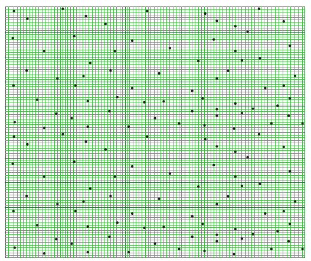
Then, calculate the mean number of dust particles in the marked area.
Mean equal to total number of dust particles on collector divided by number of squares on collector
The range of the dust can also be calculated as given below
Range equal to Maximum value minus minimum value
Collect details from all the areas where we have kept the dust collector sheets. Tabulate the recordings in the table given below
Location of dust collector |
Mean number of dust particles per small square |
Range |
|
|
|
|
|
|
|
|
|
|
|
|
Which area do you think will have the most dust? dash
Which area do you think will have the least dust? Dash
Test for water vapour in air
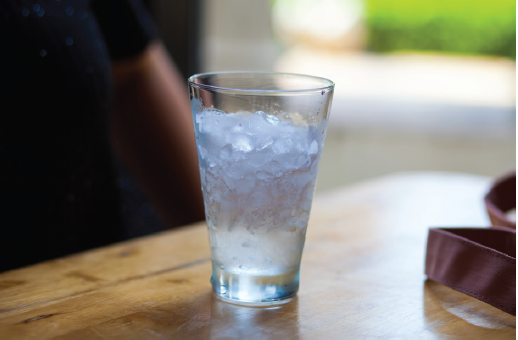
Take a few ice cubes in a glass. Keep it on the table for a few minutes. Observe what happens. You could see tiny droplets of water all over the outer surface of the glass. From where do these droplets come? The water vapour present in the air condenses on the cold surface of the glass. This shows that air contains water vapour.
When we burn a candle, paper, kerosene, coal, wood or cooking gas (LPG), oxygen is needed. The oxygen needed for the burning of candle, paper, kerosene, coal, wood and cooking gas comes from the air around us. Thus, for burning a substance continuously so as to make fire, a continuous supply of fresh air is needed. If we cut off the supply of fresh air to a burning substance, then the burning substance will not get oxygen necessary for burning to continue and hence the substance will stop burning. In rockets, as they go high in the atmosphere, the availability of oxygen is considerably reduced. Therefore, in rockets along with the fuel, oxygen is also carried for combustion.
The process of burning of a substance in the presence of oxygen and releasing a large amount of light and heat is called burning. If the process does not emit flame then it is called combustion.
Activity 4:
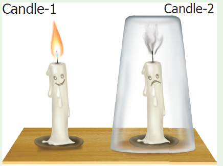
Oxygen is necessary for burning Place two candles on a table. Ensure that both the candles are of same size and height. Mark them as candle 1 and candle 2 using a chalkpiece. Light both the candles. Now, cover candle 2 with glass tumbler as shown in the figure Observe the happenings at both the candles.
What does happen to candle 1? dash
What does happen to candle 2? Dash
Can you guess why did the covered candle extinguish? dash
Let us summarize the happenings.
The candle 1 continues to burn, unless it is blown – off by strong moving air or any other external force. This is because fresh air is continuously available to the candle for its burning process. Candle 2 glows for a while and then gets put – off. When the burning candle is covered with a glass tumbler, the candle can use the oxygen available in the air inside the glass tumbler. Since only a small amount of air is present inside the glass tumbler – only a small portion of oxygen is available for the candle to continue glowing. When all the oxygen of the air inside the gas jar is used up, then the burning candle gets extinguished.
Now, repeat the candle glowing experiment taking four containers of different sizes. For example, you can take a 250 milli conical flask, a 500 milli bottle, a one-liter jar, a two-liter jar. Cover the burning candle one by one with these containers and find out how long it takes for the candle to extinguish in each case. Record your observations in the following table.
Serial number |
Volume of the Container in (milli liter) |
Time taken for candle to extinguish in (second) |
|
|
|
|
|
|
|
|
|
|
|
|
Can you write interpretation based on your observations at the table?
dash
Respiration in plants
Plants require energy for their growth and hence respiration also occurs in plants. During respiration, plants take in oxygen and release carbon–di–oxide, just as animals do. Gaseous exchange with air in atmosphere takes place in plants with the help of tiny holes called stomata present on their leaves.
Photosynthesis
Plants manufacture food by a process called photosynthesis. During photosynthesis, carbon-di-oxide from the air and water from the soil react in the presence of sunlight to produce food. Most plants possess a green pigment called chlorophyll and it is also used-up in the process of photosynthesis. The word equation given below explains the process of photosynthesis.
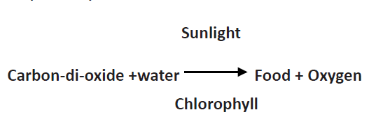
Plants release oxygen during photosynthesis which is much more than the oxygen consumed by the plants, during respiration.
Respiration in Animals
When we breathe in air, the oxygen present in the air reacts chemically with digested food within the body to produce carbon-di-oxide gas, water vapour and energy.
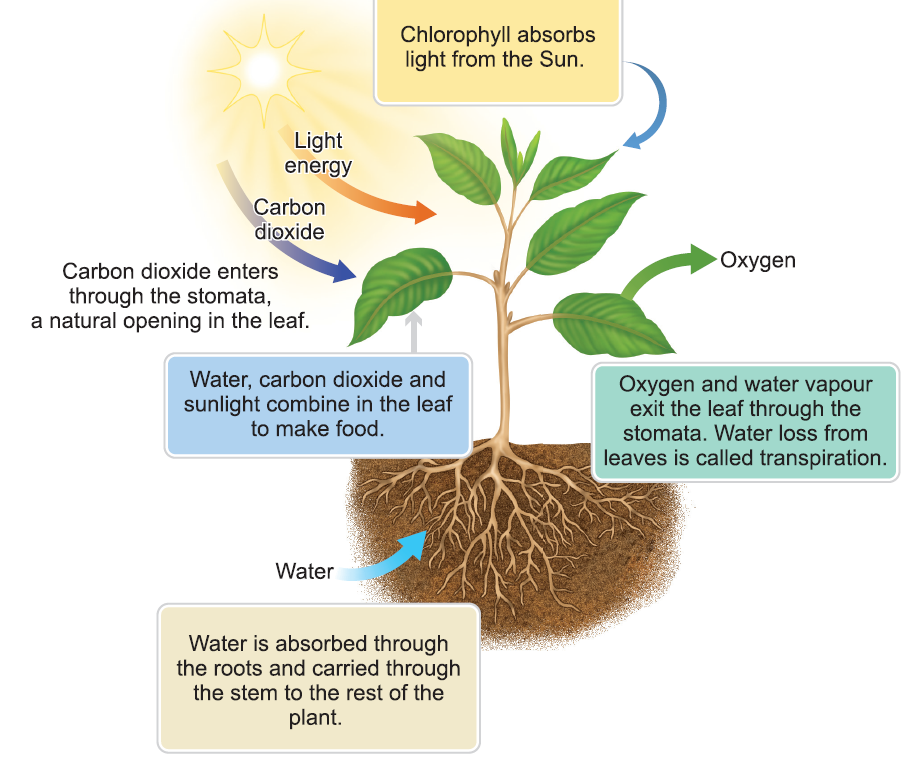
Light energy – Chlorophyll absorb light from the sun
Carbon di ox side - Carbon di ox side enters through the stomata, a natural opening in the leaf
Water – water is absorbed through the root and carried through the stem to the rest of the plant
water, carbon di ox side and the sun light combine in the leaf to make food
Oxygen – Oxygen and water vapour exit the leaf through the stomata water loss from leaves is called transpiration.
This energy is required to carry out many processes in the body such as movement, growth and repair. This process by which oxygen reacts with digested food to form carbon-di-oxide, water vapour and energy is called respiration. The process can be represented by a word equation as given below
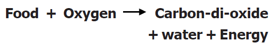
Carbon-di-oxide formed during respiration dissolves in the blood and is exhaled out of the body through the lungs. The inhaled and exhaled air thus contain the same substances but in different proportion, except nitrogen which is present in the same amount. Inhaled air contains more oxygen while the exhaled air contains more carbon-di-oxide.
Let us have a look at the following table to compare the composition of air in inhaled and exhaled air.
Component Nitrogen |
Inhaled air 78% |
Exhaled air 78% |
Component Oxygen |
Inhaled air 21% |
Exhaled air 16% |
Component Carbon- di - oxide |
Inhaled air 0.03% |
Exhaled air 4% |
Component Water vapour |
Inhaled air Variable amount |
Exhaled air Amount increases in exhaled air |
Component Noble gases |
Inhaled air 0.95% |
Exhaled air 0.95% |
Component Dust |
Inhaled air Variable amount |
Exhaled air none |
Component Temperature |
Inhaled air Room temperature |
Exhaled air Body temperature |
Respiration of plants and animals in water
The water in ponds, lakes, rivers and seas have some amount of dissolved air containing oxygen in it. The plants and animals that live in water use the oxygen dissolved in water for breathing. For example, frogs respire through their skin, fish respire using their gills.
When carbon-di-oxide is cooled to -57 degree Celsius, it directly becomes a solid, without changing to its liquid state. It is called dry ice and is a good refrigerating agent. Dry ice is used in trucks or freight cars for refrigerating perishable items such as meat and fish while transporting them.
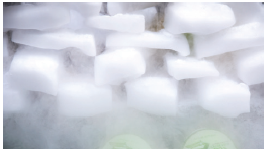
a. a patient having breathing difficulties,
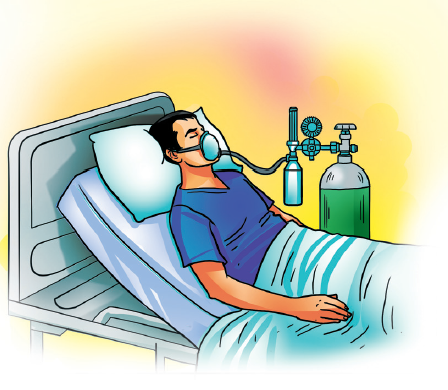
b. a mountaineer climbing a high mountain,
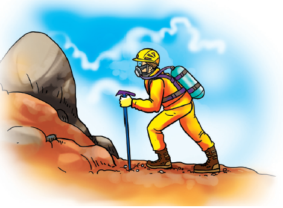
c. a diver going deep into the sea oxygen gas cylinders are used for breathing purposes.
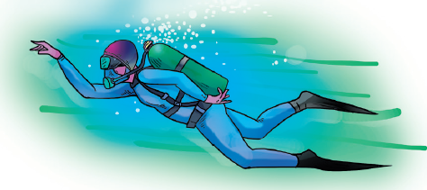
Blowing air is used to turn the blades of wind mills.
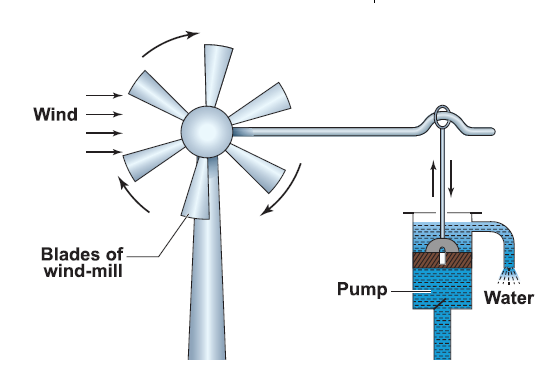
The wind mills are used to draw water by running pumps, run flour mills and to generate electricity.
In animals